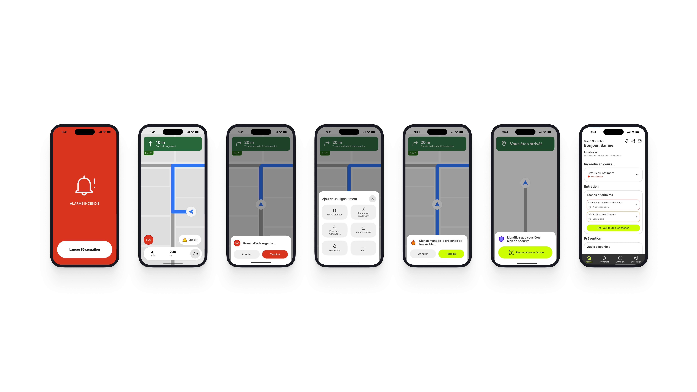
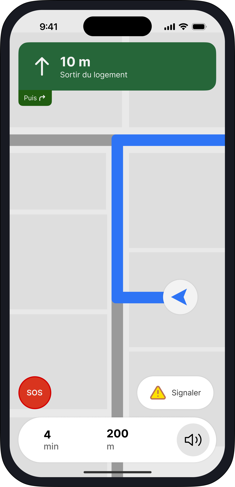
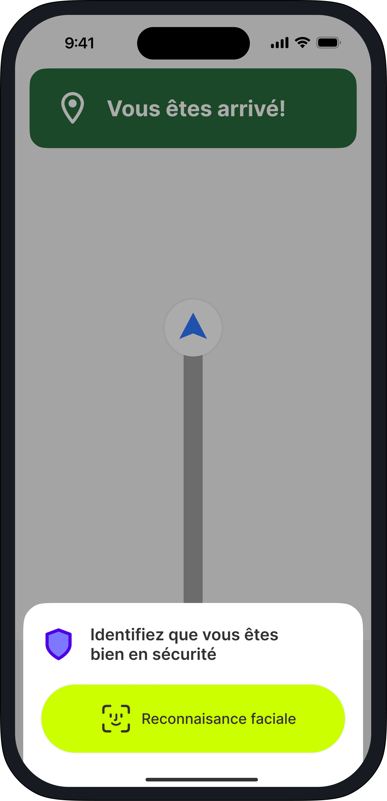
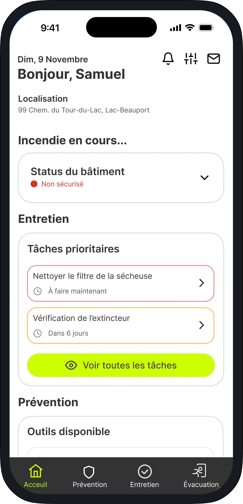

Safeway
Une évacuation repensée
Mise en contexte
Ce projet, réalisé dans le cadre d'un cours de maîtrise, avait pour but de définir une problématique précise et de concevoir une solution sous forme d'application collaborative et multiplateforme. La problématique n'étant pas définie, nous avions le champ libre pour explorer et expérimenter quelque chose sans nous mettre de limite.
Problématique
L'évacuation d'incendie dans les immeubles résidentiels et de bureaux a peu évolué avec le temps. Ce projet est né d'une situation concrète : une personne avec qui je discutais n'avait pas entendu l'alarme de son immeuble parce qu'elle portait des écouteurs antibruit et que l'alarme est uniquement dans le corridor, pas dans son appartement directement.
Alors la question suivante a émergé : Est-ce qu'il serait possible de créer une solution pour ajouter une couche de sécurité et de prévention à ce processus crucial pour les résidents d'un immeuble ?
Méthode de recherche
Recherche secondaire
La recherche secondaire consiste à analyser des données existantes telles que des études, des rapports, des articles scientifiques ou des statistiques plutôt que de les collecter soi-même. En raison de la nature et du temps limité de ce mandat, elle a constitué la principale source de données et de statistiques.
Constats
75-79 % des gens considèrent l'audio comme un moyen d'alerte fiable.
Les occupants ne partent pas automatiquement au son de l'alarme — ce délai de « pré-mouvement » est réel et doit être pris en compte.
Les écouteurs antibruit (ANC) ralentissent la réaction d'environ 40 à 50 secondes.
Même avec une alarme fonctionnelle, des décès surviennent par non-réponse ou alarme non perçue.
Opportunité de design
- Réduire le temps de pré-mouvement pour une réaction plus rapide dès le déclenchement de l'alarme.
- Offrir un second canal d'alerte pour garantir une perception immédiate, peu importe le contexte de l'occupant.
- Simplifier et guider l'évacuation pour réduire le stress et limiter les erreurs en situation d'urgence.
Solution finale
Safeway est une application mobile conçue comme une seconde couche de sécurité lors d'une évacuation d'incendie en immeuble résidentiel. Dès le déclenchement d'une alarme, elle avertit instantanément les résidents sur leur téléphone, peu importe leur situation, et les accompagne jusqu'à ce qu'ils soient en lieu sûr.
En cas de besoin, l'application permet à un résident de signaler rapidement qu'il nécessite de l'aide ou de rapporter une situation problématique, assurant ainsi une meilleure communication entre les occupants durant l'évacuation.
Au-delà des situations d'urgence, Safeway joue également un rôle préventif. Elle permet aux résidents de gérer et planifier des tâches d'entretien essentielles à la sécurité de leur logement, comme changer les batteries de l'alarme incendie, nettoyer le filtre de la sécheuse, vérifier l'extincteur ou inspecter l'état des fils électriques.


Navigation
Pendant l'évacuation, Safeway guide chaque résident vers la sortie la plus sécuritaire, lui permet de signaler rapidement un besoin d'aide ou un danger, puis de confirmer sa mise en sécurité.
Appel à l'aide
D'une simple pression, un résident peut signaler qu'il est dans l'incapacité de poursuivre l'évacuation et nécessite une assistance immédiate.

Navigation visuelle
Des indications visuelles intuitives, inspirées des applications de navigation familières, guident les résidents vers la sortie la plus sécuritaire.
Signalement en temps réel
Pendant l'évacuation, les résidents peuvent signaler rapidement une sortie bloquée, un feu visible ou une personne en danger.
Accompagnement vocal
Un guide vocal assiste les résidents en temps réel pour les orienter vers la sortie la plus sécuritaire.

Confirmation de sortie
Une vérification par Face ID permet à chaque résident de confirmer qu'il a évacué l'immeuble en sécurité.
Prévention
Au quotidien, l'application joue un rôle préventif : elle tient les résidents informés de l'état de l'immeuble et leur rappelle les tâches d'entretien essentielles à la sécurité de leur logement.

Statut de l'immeuble
Les résidents sont informés en temps réel de l'état de l'immeuble et savent exactement quand il est sécuritaire d'y retourner.
Prévention
Une liste de tâches personnalisées rappelle aux résidents les vérifications essentielles à effectuer pour maintenir leur logement sécuritaire.